ロケットランチャーの入手方法
※このページはps4版の方でも同様にお楽しみいただけます。
ロケラン入手までの流れは大まかに説明すると、グリーンカードキー、フューズ入手→港のモニュメントパズル→空港のモニュメントパズル→ロケット発射場のモニュメントパズル です。
また、ロケランの筒自体の入手はカードキーを使わなくても武器ボックスからドロップすることがあります。
カード類を集めよう
まずロケットおよびロケットの弾を入手するには緑青赤のすべての色のカードキーとフューズが4つほど必要になります。なのでそちらをまずは入手しましょう。
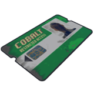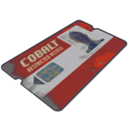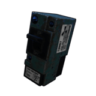・緑のキーカードの入手方法
緑のカードは地上の科学者AIがたまに所持している又は、マーケット、灯台、ガソリンスタント、ジャンクヤードとかで見つかります。10回までしか使用できないので注意
・青のキーカードの入手方法
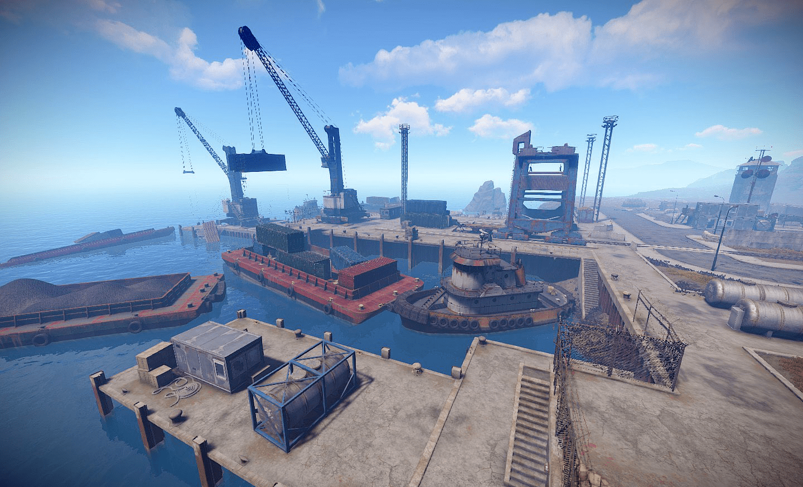緑のキーカードとフューズを入手したら港へ向かいましょう。マップの海の近くにあります。港は二種類あるので両方のやり方を説明します。
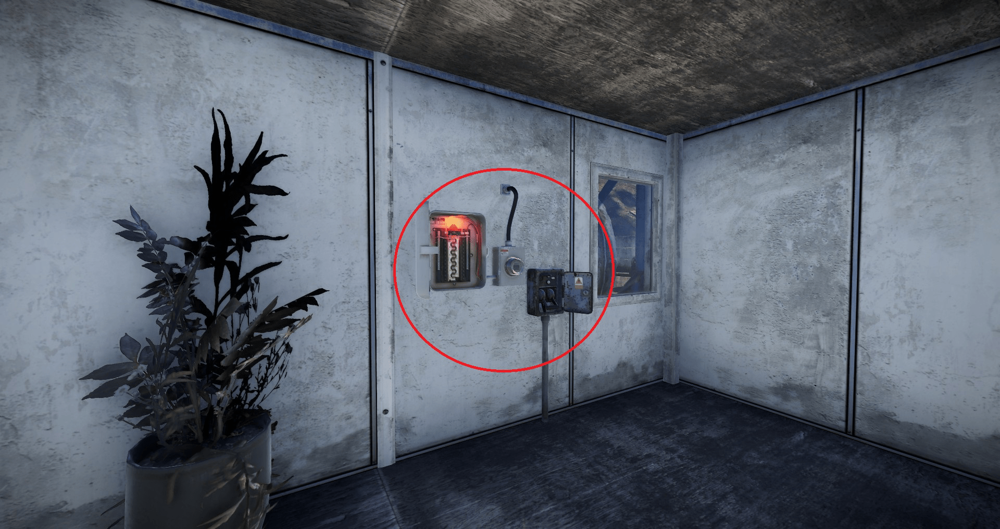港の中には二階建てのプレハブがあります。その中にフューズを差し込む部分があるので差し込みましょう。
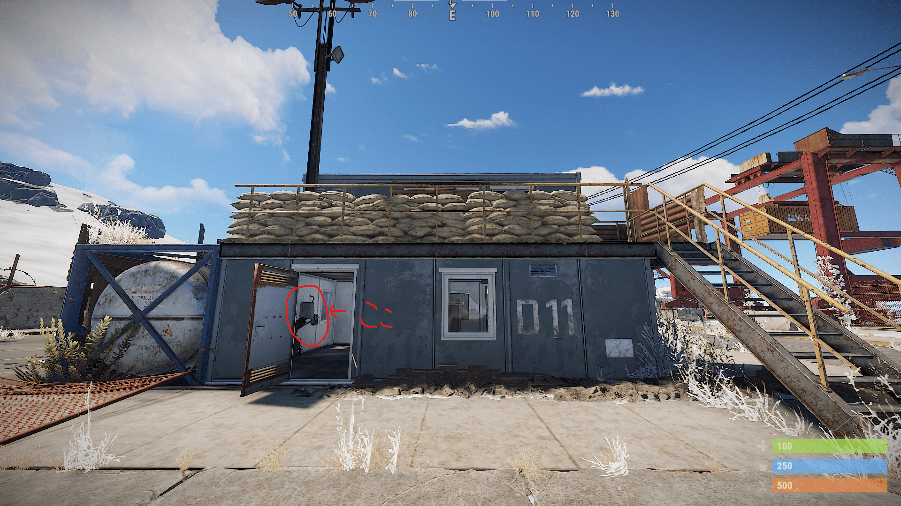差し込んだら同じ建物の二階に電力が供給されるので緑のカードキーを使って中に入りましょう。カードは光っている部分に近づいて左クリック、ps4ならR2です。
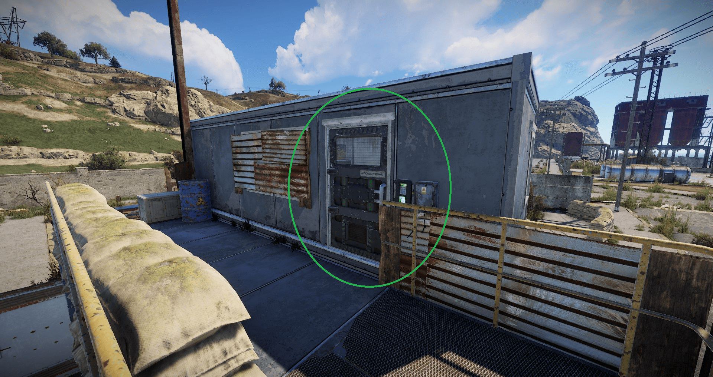・ではここからもう一つの港のモニュメントパズルを説明します。
まず同様に港の中央あたりに一階建てのプレハブがあるので探しましょう。そして、その中に同様にフューズを差し込む部分があるので差し込みましょう。
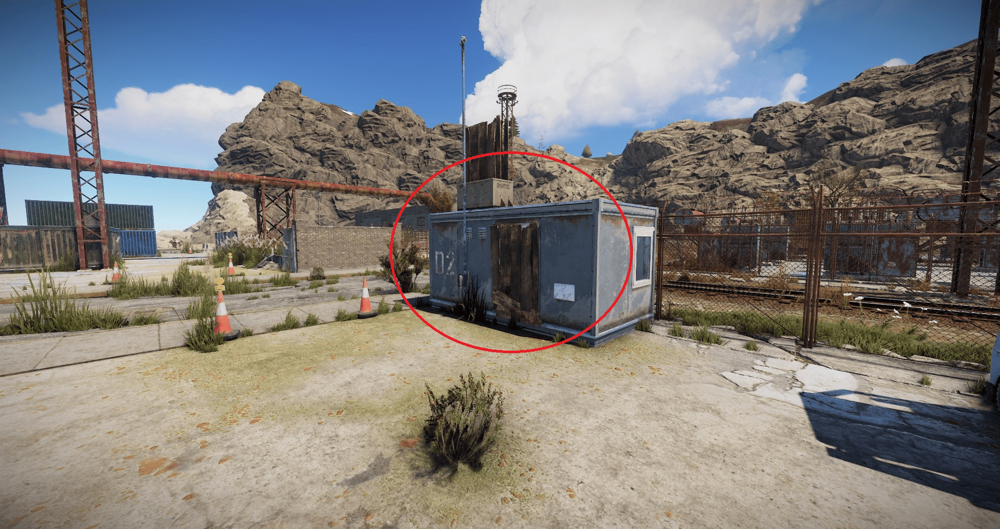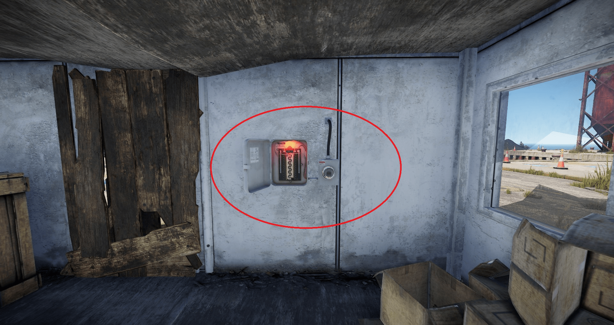差し込んだらプレハブの表にスイッチがあるのでオンにしましょう。すると近くのプレハブに電源が供給されるのでカードをかざして中に入りましょう。
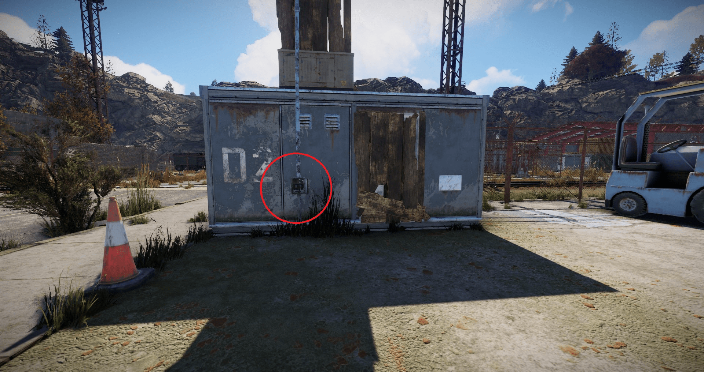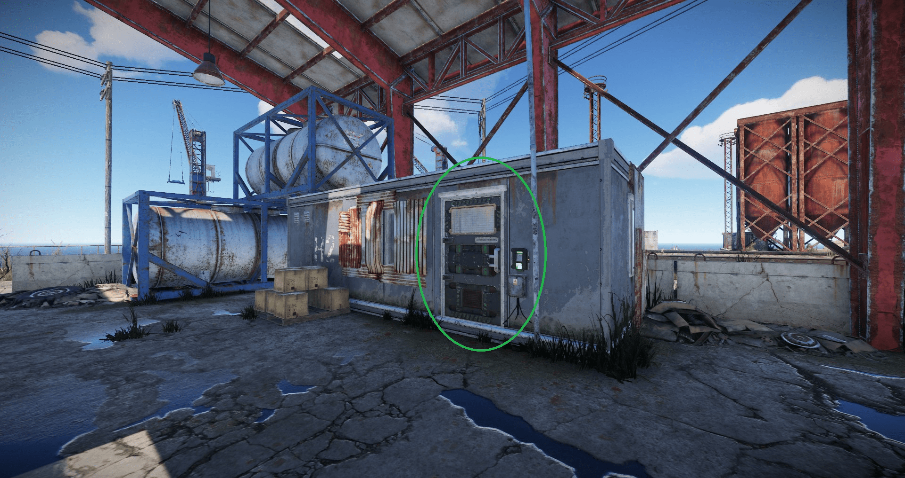※青のカードキーはプレハブの中の机の上にあります。他のプレイヤーも同様に狙っているため、なかったら取られたということです。数十分で再度沸きます。
・レッドカードキーの入手方法
レッドカードキーの入手方法はたくさんありますが、今回は空港のモニュメントパズルを紹介します。(一番簡単なので)
まず空港の位置ですが、下の画像の場所です。日本語設定ならエアフィールドと書いてあるのですぐわかります。 放射線があるので行くときは布の服を一式着ていきましょう。
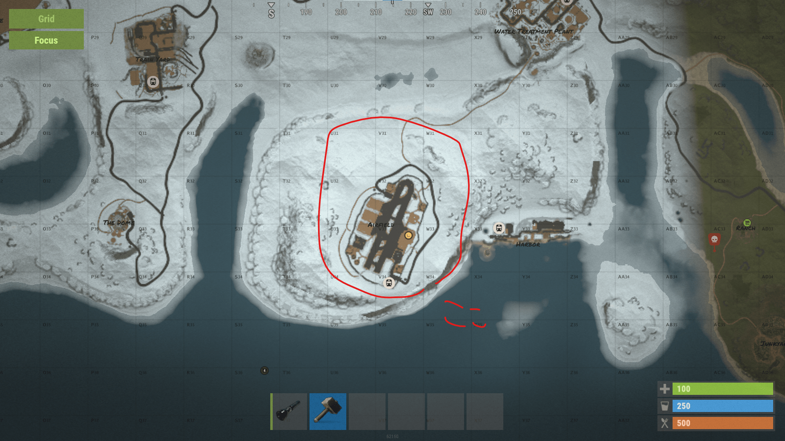まず二階建ての管制塔のような建物の一階の角の部屋にフューズをはめ込みしたのタイマーをオンにしてください。
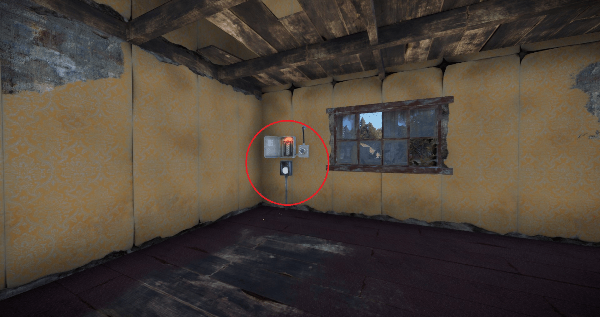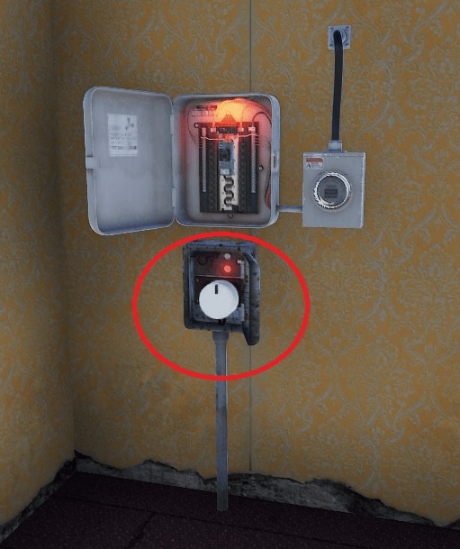一分間だけ地下のランプが光るので急いで地下に移動してください。
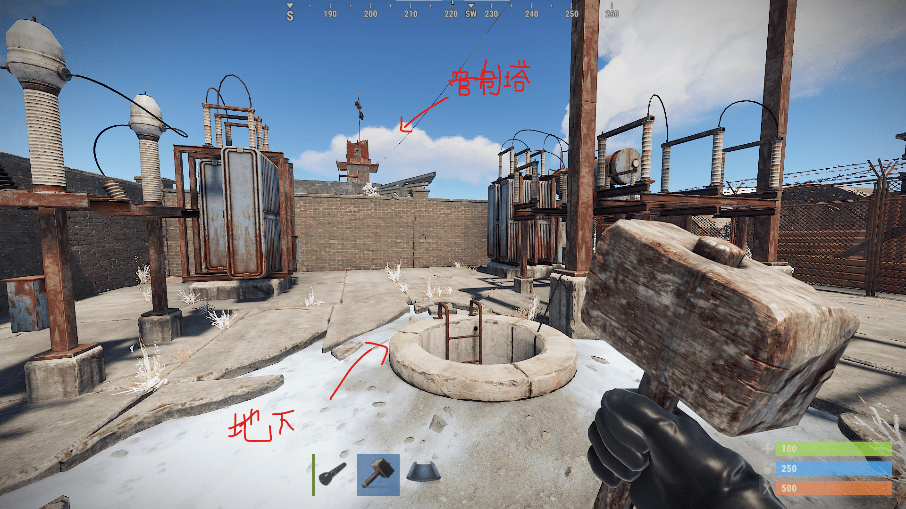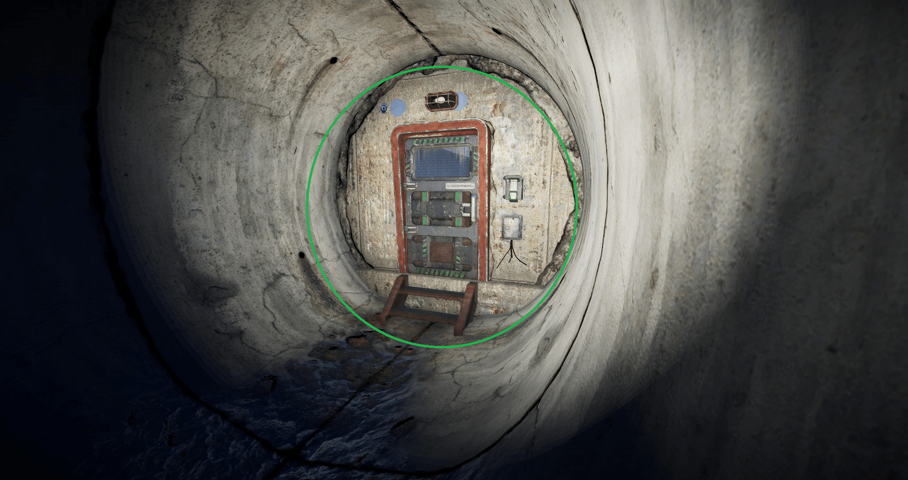地下の扉を開けると中にフューズを入れる場所があります。そこに二つ目のフューズを入れてください。
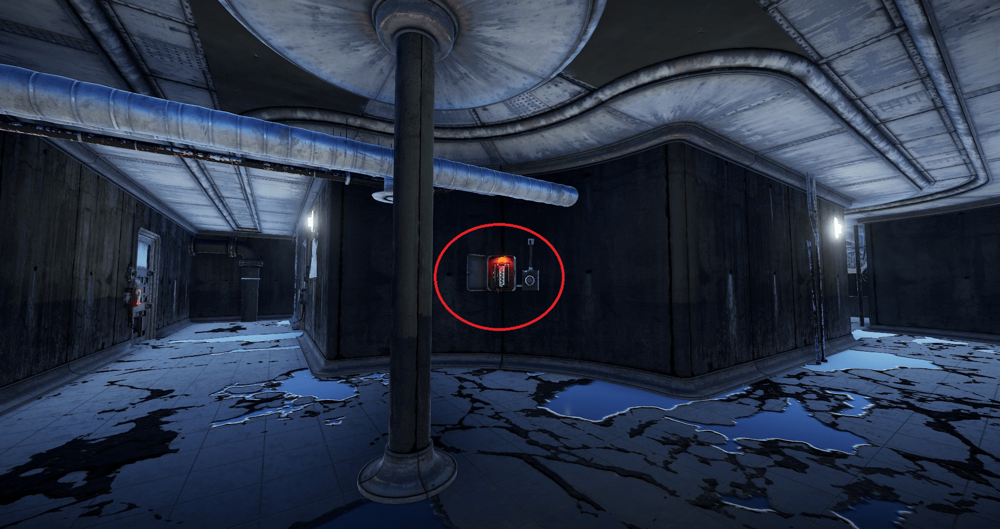近くのドアに電源が供給され、青のカードキーが使えるようになります。
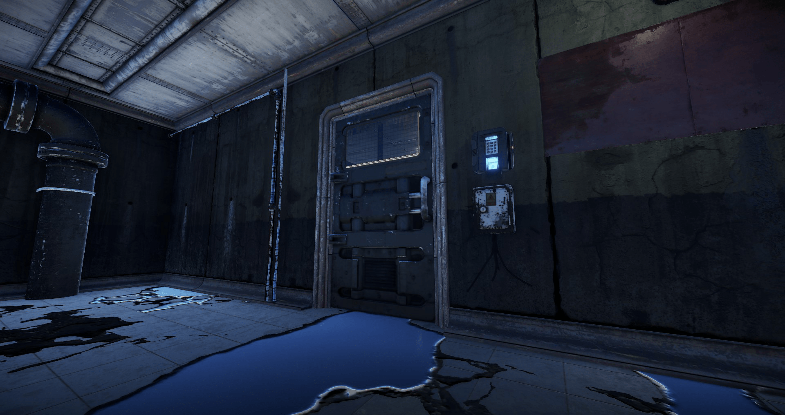同じく中のテーブルにレッドカードキーがあるので忘れずに取りましょう。また武器ボックスもあるのでロケランの筒が入手できることもあります。
ロケット発射場に行こう！
必要なもの :グリーンカードキー、レッドカードキー、フューズ二個、防護服を着ていくこと。また初めての場合は包帯を20個ほどと飲める状態の水をできるだけたくさん用意してださい。
まず三つのガスタンクが並んでる場所の隣にある二階建てのプレハブの一階に行き、緑のカードキーを使用し中に入り、フューズをはめ込み、スイッチをオンにします
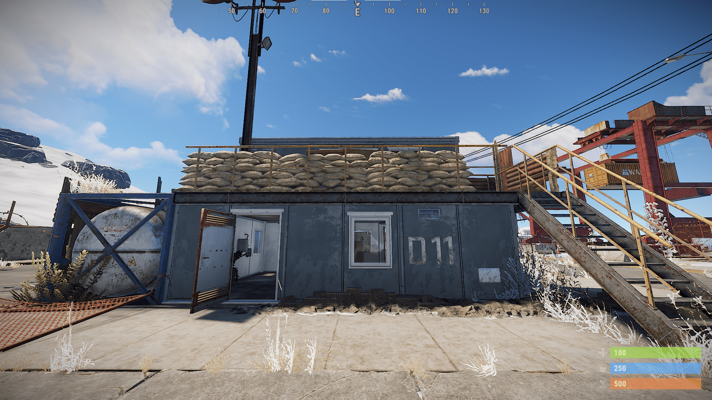スイッチをオンにしたらダッシュでプレハブから画像のやじるしの位置の建物に移動します。戦車が走っているため見つからないように移動してください。怖い場合は外周を回るのも一つの手です
中に入るとオフィスのような空間にこのようなフューズをはめ込む場所があります。そこにフューズを差し込んでスイッチをオンにしてください。
するとロケット製造所の入り口四か所のドアに電源が供給されるので好きな場所からカードキーを使って入ってください。

建物の屋上にレアアイテムが入っているボックスがあるのでそれを目指して上ります。建物中央から上る方法がありますが今回はショートカットした上り方を紹介します。
4つの入り口の内、二つは階段が目の前にあります。そこをつかいます。画像を見てわかる通り、 この建物の近くと内部では防護服を着ていても放射線を食らいます。 水を飲むことである程度放射線を減らせるのと、体力減少は避けられないのでこまめに回復をしましょう。
階段はこのように穴抜けになっている部分があります。屋上に行くまでに二か所ほどありますので、内側の手すりに乗って超えましょう。

ひたすら上がって行くと屋上に出られるドアがあります。そこから屋上に行きましょう。屋上には壊れたヘリがあり、その付近にエリートボックスや武器ボックスが沸きます。エリートボックスにはロケランの弾が一定の確率で入っています。 ただ、ロケット発射場は人気なため、上まで行ってもボックスが沸いてないことが多いです。
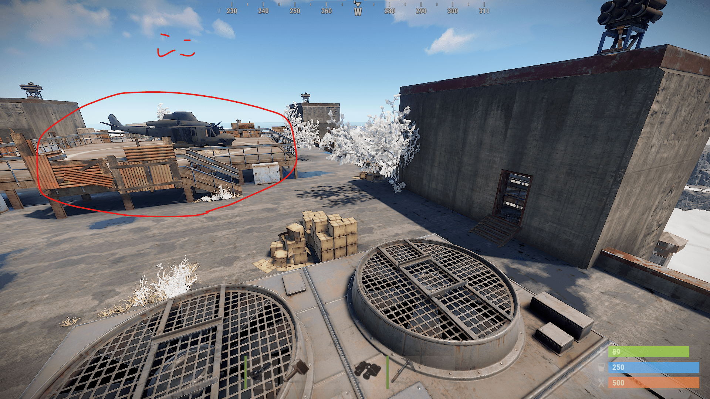アイテムを取り、階段を下ります。この時穴抜けになってる部分に落ちちゃう人が本当に多いので気を付けてください。一度死ぬと今までの作業をもう一度行うことになります。
一番下まで来たら、ある部屋を探します。出口の部屋と別に赤い看板？のついた部屋があるので探してください。
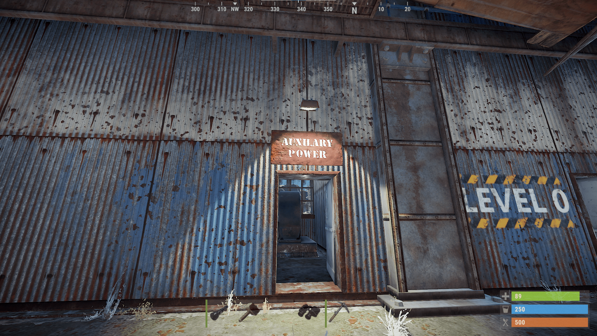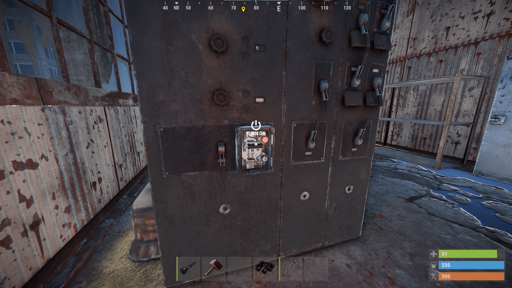このレバーをオンにすることで外に出られるようになるので扉を開けて出ましょう。帰るまでがrustなので帰り道で無駄な戦闘を控え、安全に帰宅しましょう。